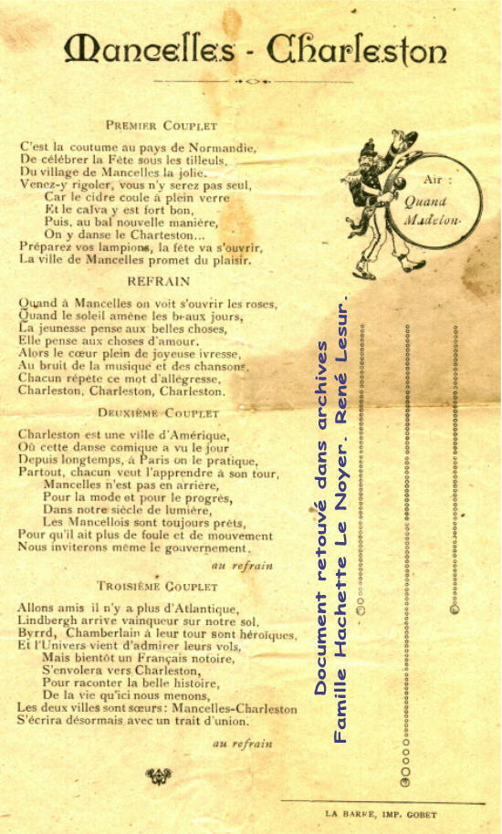
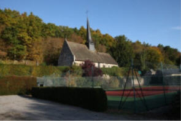
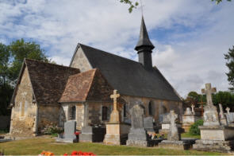
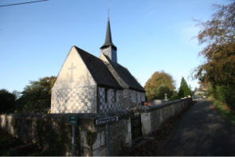

|
Les 17
Communes
du Canton
de
Beaumesnil :
Le Noyer en
Ouche
Gouttières
Beaumesnil
Thevray
Ajou
Saint
Aubin des Hayes
Sainte
Marguerite en Ouche
Les Jonquerets
de Livet
Saint
Aubin le Guichard
Grandchain - Granchain
La Barre
en Ouche
Bosc-Renoult
en Ouche
Epinay
Landepéreuse
Gisay la
Coudre
La Roussière
Saint
Pierre du Mesnil
Retour
Le Canton de
Beaumesnil
Présentation :
cliquez...
|
Ajou
:
|
|
Superficie : 983 Ha - Alt : 144m.
286 Habitants (déc 2015) : Les Ajouciens, Ajouciennes
soit 26 Habitants par km² ou 3,44 Ha par Habitant
|
|
Mairie :
Tel/Fax : 02.32.30.92.00
E-mail : ajou@meo27.fr
Secrétaire : Sophie Van Hollebeke
Secrétariat
ouvert le Jeudi de 16h00 à 18h00
Maire délégué : Jean-Jacques PREVOST Tel :
02.32.30.70.02 Port : 06.07.99.62.58 - E-mail : jjprevost@wanadoo.fr
Conseillers :
Mme BRARD Aurélia
conseillère municipale – conseillère communale d’Ajou
Mme THIBOUT Véronique
conseillère municipale – conseillère communale d’Ajou
|
TAXI de AJOU
Mr LOMBARDO 7j/7, 24h/24, Samedi et Dimanche, toutes distances
tel :
02.32.60.19.95 et 06.27.48.57.57
Tennis Club Ajou-La Ferrière
M. Jean-Loup CARRETERO Tel : 06 07 33 45 42 -
jean-loup.carretero.20@orange.fr
-
https://www.mesnil-en-ouche.fr/bouger-et-se-cultiver/activites-sportives/terrain-de-tennis/

Histoire :
Cette commune d'Ajou est née en 1792 de la fusion de trois paroisses : Ajou,
Mancelles et Saint Aubin sur Risle. En mairie existe encore les registres tenus
depuis 1630 dans ces paroisses dont on parle déjà au XIè et XIIè Siècle.
|
 |
1° AJOU, Le nom d'Ajou (Aiou seu Ajou) est cité pour la première fois dans
une chartre de la seconde moitié du XIIè siècle, par laquelle Henri II, roi
d'Angleterre,confirma la donation que Vauquelin de Mancelles et sa sœur avaient
faite aux moines du Bec, du patronage de l'église d'Ajou. Nous trouvons aussi
une famille d'Ajou, notamment Raoul vers 1280. |
2° MANCELLES, L'église est dédiée à
Saint Côme et saint
Damien. La présentation appartenait au seigneur de Moulin-Chapel.
Mancelles figure dans une chartre de Lire à la fin du XIè siècle.
Au XII ème siècle, Vauquelin de Mancelles était seigneur de cette paroisse.
Au XVème siècle la paroisse appartenait à la famille de Pommereuil.
Après 1588, la confrérie de Charité de La Ferrière
avait comme deuxième torcher : noble homme Seigneur messire Charles de Pommereuil. |
 |
|
Église de
Mancelles
Il existe des vestiges de litres seigneuriales à l'église de
Mancelles :
- A l'extérieur, sur le mur occidental au dessus du porche
d'entrée, deux blasons dont un est encore lisible. La litre date du début du
XVIIIème aux armes de la famille de la Luzerne, peut-être de Guy César de La
Luzerne.
- A l'intérieur, sur le mur nord de la nef, au niveau de la
troisième travée, un blason peint sur un emplacement antérieurement décoré de
fleurs de lys, il est dans un état médiocre. Cette litre date du XVIIème aux
armes de Pommereuil
L'église de Mancelles
abrite un tabernacle qui a la particularité d'être tournant, construit dans la
seconde moitié du 17è S. La porte est solidaire de la partie interne qui repose
sur un axe pris à la fois dans la table d'autel et dans le sommet de la partie
extérieure.
|
|
 |
SAINT-AUBIN-SUR-RISLE
Église : Toutes les paroisses dédiées à
Saint Aubin remontent à une haute antiquité. Saint-Aubin-sur-Risle, du doyenné d'Ouche portait au XIIè S, le nom de Vernet
"Vernetum" d'après une chartre de Robert de Leycester. On trouve aussi Saint-Aubin-de-Vernet, S. Albinus de Vernets dans une chartre de 1261 du
cartulaire de Saint Taurin, S. Albinus Super Rillam ( IIè Pouillé
d'Evreux). Le patronage appartenait au seigneur du lieu.
Dès
1514, Christophe Le Loutrel, écuyer, était seigneur temporel de Saint Aubin sur
Risle, paroisse qui resta jusqu'à la Révolution dans cette famille. |
|
Il existe, à l'intérieur de l'église,
les vestiges d'une litre seigneuriale surtout visibles sur les murs ouest et
nord de la nef. La bande funéraire occupe encore toute la longueur du mur ouest,
mais elle est décolorée dans son ensemble et a même disparu en certains endroits
du fait de l'effritement du revêtement mural. Les armoiries reposent toutes sur
un rectangle noir mesurant 55cm x 80cm, qui provoque un décrochement sur la
partie supérieure de la bande funèbre. Cette litre a sans doute été peinte à
l'occasion du décès de Charles Le Loutrel dernier seigneur de la paroisse.
On peut encore voir deux armoiries
situées de part et d'autre du portail d'entrée.
La construction de l'église a débuté
au XVè S par la nef pour se terminer par le chœur édifié selon une inscription
en 1546, par Pierre Le Louterel, curé et parent du seigneur de Saint Aubin. La voûte de l'église du XVIè est en
bois décoré. Statues en bois polychrome XVIè et XVIIè. |
|
Château de Saint Aubin sur Risle
Patrick Lambert et Max Maniglier
8, Rue de l'Eglise
Tel :
02.32.58.51.44 - 06.06.66.66.55
Chambres et Tables d'hôtes en Pays d'Ouche,
http://www.chateaudesaintaubin.com/
e-mail :
chateaudesaintaubin27@orange.fr
Le Château de Saint Aubin sur Risle est le siège de
l'Association Culturelle du Château de Saint Aubin,
créée par des habitants du hameau de Saint Aubin sur
Risle dont le but est de se consacrer à la restauration de son église. Afin de
réunir des fonds, l'Association participe à la Fête de la Peinture le 1er juin
2014, dans l'enceinte du château.
|
AJOU est
l'une des communes du département de l'Eure (sur 675), qui possède une église,
plus exactement Deux, parmi les 66 églises
où l'on peut voir une litre seigneuriale,
il y a 81 litres recensées dans l'Eure.
La litre ..., une bande armoriée qui a
orné les murs de la majorité des églises de France sous l'Ancien Régime, à
l'occasion du décès du seigneur.
Voir à ce sujet l'ouvrage de
Pierre BODIN,
président fondateur de la Société historique et archéologique Les Amis de
Bernay : Les litres seigneuriales de
l'Eure .
Renseignements : AMSE - Amis des Monuments et Sites de l'Eure.
L'AMSE a pour but de veiller sur le patrimoine naturel et bâti (civil,
industriel, militaire ou religieux) du département de l'Eure.
http://www.amse.asso.fr/
E mail : info@amse.asso.fr
AMSE : BP 85 , 27800 Brionne tél : 02.32.43.73.29 Fax : 02.32.43.73.28
Sur la façade de la mairie d'Ajou édifiée en 1875, une plaque
érigée le 19 septembre 1888 par
La Société Libre de l'Eure, section de Bernay, rappelle le
souvenir de :
Jean Robert BREANT,
né à Ajou le 26 - 8bre - 1774. -
Jean Robert BRÉANT - Ancien commissaire Général des Monnaies, Officier
de la légion d'Honneur, Auteur d'importants travaux scientifiques et
industriels. Fondateur d'un prix de 100.000 F. pour la guérison du choléra.
Le Charpillon de 1868 fait mention : La Ferrière à
donné naissance à Bréant, chimiste et métallurgiste distingué, je ne sais si il
y a un lien de parenté.
nb. Dans un agenda paru il y a quelques années, il était noté : Jacques Philippe Bréant (1790-1872) , poète, qui composa l'art de
peindre et deux pièces : le printemps et l'été. A vrai dire, après
vérification, il y a une erreur, c'est bien Jean Robert Bréant qui est à Ajou.
Dans une parution de
la dite Société Libre de l'Eure, est relatée la cérémonie pendant laquelle la
plaque en mémoire de Jean Robert Bréant a été apposée, M l'Abbé Porée et M
Haillard ont rapporté l'histoire d'une manufacture de chapeaux qui fut établie à
Ajou en 1691 par Nicollas Martin, chapelier originaire de la paroisse de
Livarot. M Martin
Le Pays d'Ouche est baigné par la Risle.
Voir à ce sujet le Livre de Laurent Colombe intitulé :
La RISLE : fleuve de Normandie - Une histoire d'eau -
Laurent Colombe - Le moulin à tan
Saint Aubin sur Risle - 27410 AJOU
Email :
colombe5@caramail.com
|